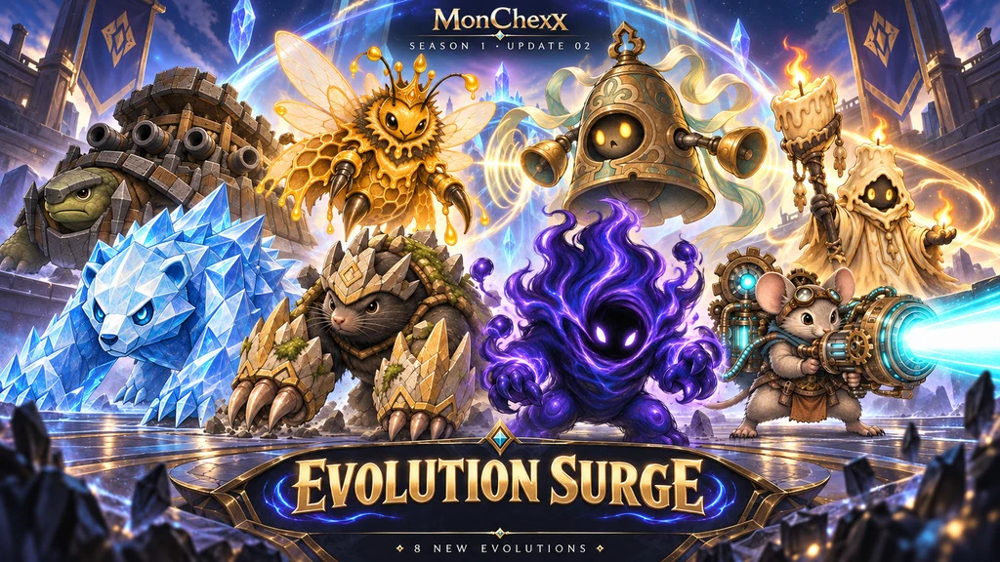
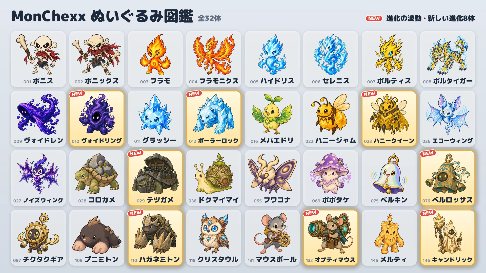

10月17日、新しい進化8体が追加されます。

新しい進化8体
- ヴォイドリング：ヴォイドレンから進化 · タンク
- ポーラーロック：グラッシーから進化 · タンク / ファイター
- ハニークイーン：ハニージャムから進化 · サポート / 遠距離
- テツガメ：コロガメから進化 · タンク
- ベルロッサス：ベルキンから進化 · タンク / サポート
- ハガネミトン：プニミトンから進化 · タンク / アサシン
- オプティマウス：マウスボールから進化 · 遠距離
- キャンドリック：メルティから進化 · サポート / 遠距離
入手方法
- クレーンゲーム（イベント）：イベント期間（10月17日～24日）中は、列の両端にある二台を除くすべてのマシンに、新しい進化1種類がほかのぬいぐるみ2種類といっしょに入ります。イベント終了後は、新しい進化もほかのぬいぐるみと同じ割合で入ります。
- ぬいぐるみ交換所：予備のぬいぐるみ10個で好きなぬいぐるみを（選んで交換）、3個でランダムなぬいぐるみを（ランダム交換）もらえます。
- ぬいぐるみパック：新しい進化も出ます。
進化ぬいぐるみの使い方
- 進化ぬいぐるみは別に集めるぬいぐるみで、持っていればすぐにチームに入れられます。
- 「チームを作る」でぬいぐるみを選び、基本形・進化で姿を切り替えられます。
- 同じ進化系統のぬいぐるみは、ひとつのチームに一体だけ入れられます。
- 進化ぬいぐるみのレベルは、基本形のぬいぐるみとは別に上がります。
新しいぬいぐるみ
「攻撃力の」「魔力の」「最大HPの」とある数値は、レベルが上がるとともに大きくなります。
 ヴォイドリング · タンク · 射程1マス
ヴォイドリング · タンク · 射程1マス
- ヴォイド吸収：自身の最大HPが、魔力の200%と戦闘開始時の最大HPの3%を合わせた分だけ増え、増えた分のHPを回復します。その後、自身の周囲1マス以内のすべての敵に、自身の最大HPの10%分の魔法ダメージを与えます。最大HPが戦闘開始時の3倍になるとこの範囲が1マス広がり、その後、戦闘開始時の最大HP分増えるたびに同じだけ広がります。増えた最大HPは戦闘が終わるまで維持されます。
- ヴォイドフィースト：4マス以内の敵がアクティブスキルを使うたびに、マナを10得ます。
 ポーラーロック · タンク/ファイター · 射程1マス
ポーラーロック · タンク/ファイター · 射程1マス
- フロストスマッシュ：現在の対象に攻撃力の240%分の物理ダメージを与え、1.5秒間凍結させます。凍結した敵は行動とマナの獲得が止まります。対象の後ろへ2マスまで広がる扇形の範囲内の敵に、攻撃力の180%分の物理ダメージを与え、攻撃速度を6秒間15%下げるフロストを付与します。
- クリスタルスキン：受ける魔法ダメージが20%減ります。魔法の継続ダメージにも適用され、魔法耐性で減らしたあとに計算します。
 ハニークイーン · サポート/遠距離 · 射程3マス
ハニークイーン · サポート/遠距離 · 射程3マス
- ロイヤルゼリー：自身の働きバチすべてのHPを、それぞれの最大HPの10%分回復し、3秒間攻撃速度を200%上げます。その後、働きバチが最大数より少なければ、自身の周囲の空いているマスに働きバチを1匹召喚します。
- 働きバチ軍団：働きバチを最大3匹まで従えます。働きバチの能力値はハニークイーンのレベルに応じて上がり、対象の数に上限がある味方向けの効果には選ばれません。働きバチは毎秒、最大HPの4%分の魔法ダメージを受けます。ハニークイーンが倒れると働きバチは暴走し、与えるダメージと受けるダメージが2倍になります。
- 働きバチのHP 60 · 働きバチの攻撃力 40 (Lv.1)
 テツガメ · タンク · 射程1マス
テツガメ · タンク · 射程1マス
- 回転砲撃：向いている方向から反時計回りに一方向ずつ回りながら、大砲を6発撃ちます。各砲弾は、その方向の2マス以内で最初に当たる敵に、攻撃力の500%分の物理ダメージを与えます。砲弾の間隔は0.5秒で、攻撃速度に応じて変わります。撃っている間は移動せず、気絶または凍結すると残りの砲弾は撃ちません。砲撃が終わるまで、マナはたまりません。
- 要塞のこうら：自身の周囲1マス以内にいる敵一体につき、防御力と魔法耐性が35ずつ上がります。
 ベルロッサス · タンク/サポート · 射程1マス
ベルロッサス · タンク/サポート · 射程1マス
- 鐘つき：2秒間、自身に魔力の300%分のシールドを付与し、自身の周囲2マス以内のすべての敵を挑発します。挑発された敵はその間ベルロッサスだけを攻撃し、新たにスキルを使えません。また同じ時間内に、敵の通常攻撃を受けるたびに、防御力とシールドで減る前のダメージの25%分の魔法ダメージを、自身の周囲2マス以内のすべての敵に与えます。挑発が終わるまで、マナはたまりません。
- 共鳴：自身の周囲2マス以内のほかの味方がアクティブスキルを使うたびに、魔力の50%分のHPを回復します。
 ハガネミトン · タンク/アサシン · 射程1マス
ハガネミトン · タンク/アサシン · 射程1マス
- トンネル強襲：地中に潜って自身の弱体効果をすべて解除し、移動速度の3倍で、周囲1マス以内に敵が最も多くいる空いているマスまで移動してから、周囲1マス以内のすべての敵に攻撃力の500%分の物理ダメージを与えます。地中を移動している間は攻撃を受けません。
- 岩の爪：防御力が攻撃力の20%分上がります。
- マナ0で戦闘を始めます。
 オプティマウス · 遠距離 · 射程4マス
オプティマウス · 遠距離 · 射程4マス
- レーザーキャノン：4マス以内の現在の対象の方向へ1.5秒間レーザーキャノンをチャージしたあと、幅1マスのレーザーをコートの端まで発射し、範囲内のすべての敵に攻撃力の1000%分の魔法ダメージを与えます。方向はチャージを始めたときに決まり、チャージ中に気絶または凍結すると発射はキャンセルされます。
- 予熱回路：通常攻撃をするたびに、攻撃速度が20%ずつ上がります。この上昇に上限はなく、アクティブスキルを使うとリセットされます。
 キャンドリック · サポート/遠距離 · 射程3マス
キャンドリック · サポート/遠距離 · 射程3マス
- 消えない炎：自身を除く味方のうち、現在のHPが最も低い一体に5秒間マークを付与します。マークを付けた味方には、同じ時間、自身の魔力の200%分のシールドも付与します。マークのある味方が倒れるはずの直接ダメージを受けると、そのダメージの200%を自身が肩代わりし、味方はそのダメージを受けません。マークは同時に一つだけ維持され、継続ダメージで倒れることは防げません。
- とけるミツロウ：自身が受ける直接ダメージのうち、シールドで防いだあとに残った分は、4秒かけて分けてHPから減ります。継続ダメージはすぐに受けます。
ランク戦 · バッジ
- ランク戦の対戦相手も新しい進化を使います。
- 新しい進化8体は、「シーズン1コレクション」バッジの対象に含まれません。
- 「進化はかせ」バッジは、異なる進化ぬいぐるみを5種類持つと獲得できます。進化ぬいぐるみは現在13種類です。
すべてのぬいぐるみのバランス変更は、「バランス調整 · 戦闘システム」パッチノートで確認できます。